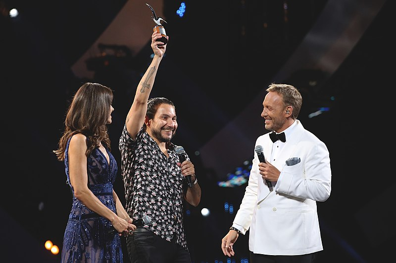
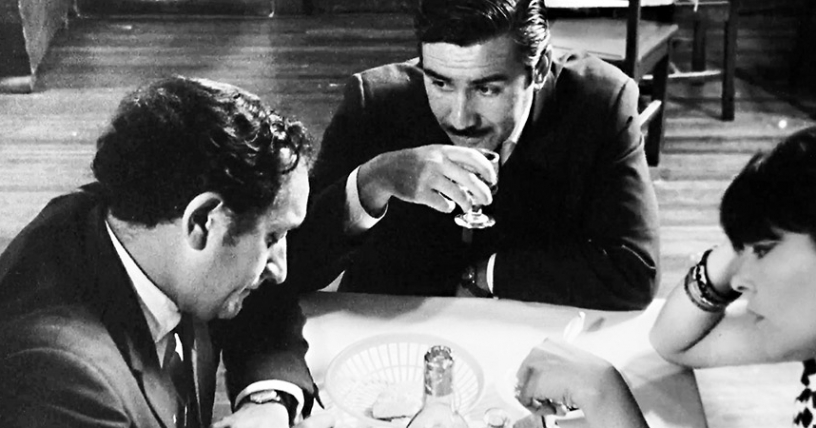

Generative AI is revolutionizing communication worldwide. However, current models are predominantly trained in standard English, neglecting other languages like the unique Spanish dialect spoken in Chile. This dialect is considered highly disruptive globally due to its rapid evolution in spoken and written language, creation of new words, and flexible rules of pronunciation. Adapting AI models to this Chilean dialect poses a challenge, requiring a curated database reflecting the language’s evolution for accuracy.
Chile boasts a rich tradition in humor, showcased annually at the Viña del Mar Festival since 1960. Leveraging the Mistral API, we created a database with more than 4,800 jokes from the festival and used a high quality subset to fine-tune a model for generating jokes based on keywords. An additional step involved mapping the mentalization levels in joke structure for quality control.
We compared Mistral 7B (non-finetuned) with our Mistral 7B finetuned model, using Mistral Large as a judge. The score improved from 43.12% to 49.09%.
Motivation
Generative AI is revolutionizing global communication, with the potential to mediate all our interactions in the near future. However, current models predominantly excel in standard English, leaving less-represented languages and dialects at a significant disadvantage. This disparity is particularly evident in the case of Chilean Spanish, a dialect so unique that it challenges the very notion of what constitutes Spanish.
The Spanish spoken in Chile stands out as one of the most linguistically disruptive variants worldwide. Its distinctiveness is unmistakable to both native speakers and language experts, although it is difficult to quantify. The Chilean dialect is characterized by:
- Rapid evolution of spoken and written language
- Frequent invention and adoption of new words
- Flexible and often unconventional pronunciation
- Constant modification and reinterpretation of linguistic rules
These factors combine to create a language environment where “speaking Chilean” diverges significantly from standard Spanish, posing unique challenges for LLMs.
The legendary filmmaker Raúl Ruiz eloquently captures the complexity of Chilean Spanish:
“What I like about Chile is that special way Chileans have of speaking. Chileans are sometimes capable of speaking without using either verb or subject, or they use verbs and the subject displaced, which makes them talk for hours and you don’t know what about. Every Chilean speaks exclusively in quotation marks. It’s someone who puts rhetoric before reality. Chile manufactures a very curious form of artificial language in which intonation is almost as important as the words that are uttered. More than the accent, it’s the strange syntax. One starts a sentence and ends with ellipsis, starts another and another, and what happens is that people are speaking with three parallel discourses.”

Adapting models to this Chilean dialect requires more than simple translation. It demands a deep understanding of the cultural context, linguistic nuances, and the ever-evolving nature of the language. To achieve this, we need to curate a reliable written record that captures the essence of Chilean Spanish, reflecting its evolution while ensuring quality and representativeness.
An unexpected but rich source for this linguistic data lies in Chile’s vibrant comedy scene. The Viña del Mar Festival, showcases the country’s top comedians and offers a treasure trove of uniquely Chilean expressions, wordplay, and cultural references. Held annually since 1960, the festival presents Chilean humor, known for its eccentricity – from talking puppets to trampoline-jumping comedians. This humor often features dialogues that are incomprehensible to non-Chilean Spanish speakers, making it an ideal dataset for training LLMs in the intricacies of Chilean Spanish.
Developing a model specialized in Chilean Spanish is not just about preserving linguistic diversity. It’s about ensuring that as AI-mediated communication becomes ubiquitous, Chilean voices are not left behind. This project aims to bridge the gap between global advancements and local linguistic realities. The goal is to create a LLM that can authentically understand and interact with Chilean Spanish speakers, reflecting their unique expressions and cultural context.
Acknowledgments
Mastering LLMs: A Conference For Developers & Data Scientists by Dan Becker and Hamel Husain. This course provided an excellent introduction to fine-tuning and inspired my participation in the Mistral AI fine-tuning hackathon.
- Special thanks to Sophia Yang (Mistral AI) for her insights on the Mistral API, and Thomas Capelle (W&B) for his teachings on the impressive Weave toolkit. Much of the code and many ideas in this project were drawn from their invaluable lessons.
Instructor: This tool was a significant help in our project. It allowed us to add structure to the output from the Mistral API, making it much easier to process our data and create a high-quality dataset for fine-tuning.
We extend our gratitude to R.I.M. Dunbar, Jacques Launay, and Oliver Curry for their insightful paper “The Complexity of Jokes Is Limited by Cognitive Constraints on Mentalizing”. Their research provided valuable parameters for defining good jokes, which we applied automatically thanks to LLMs. Their work on the relationship between joke complexity, levels of intentionality, and humor appreciation significantly improved our approach to generating and evaluating Chilean humor.